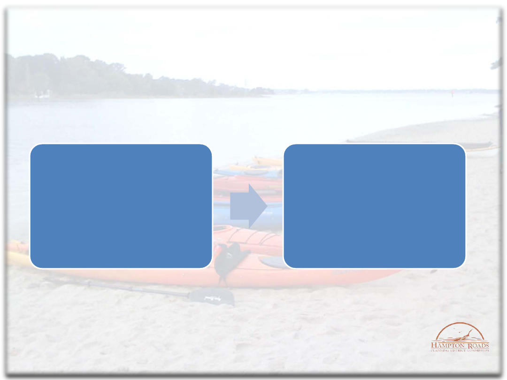
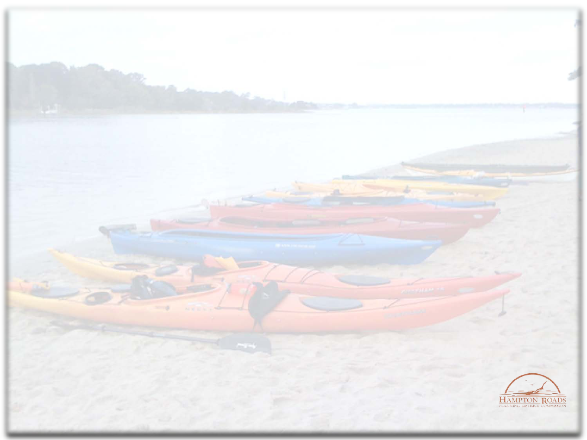
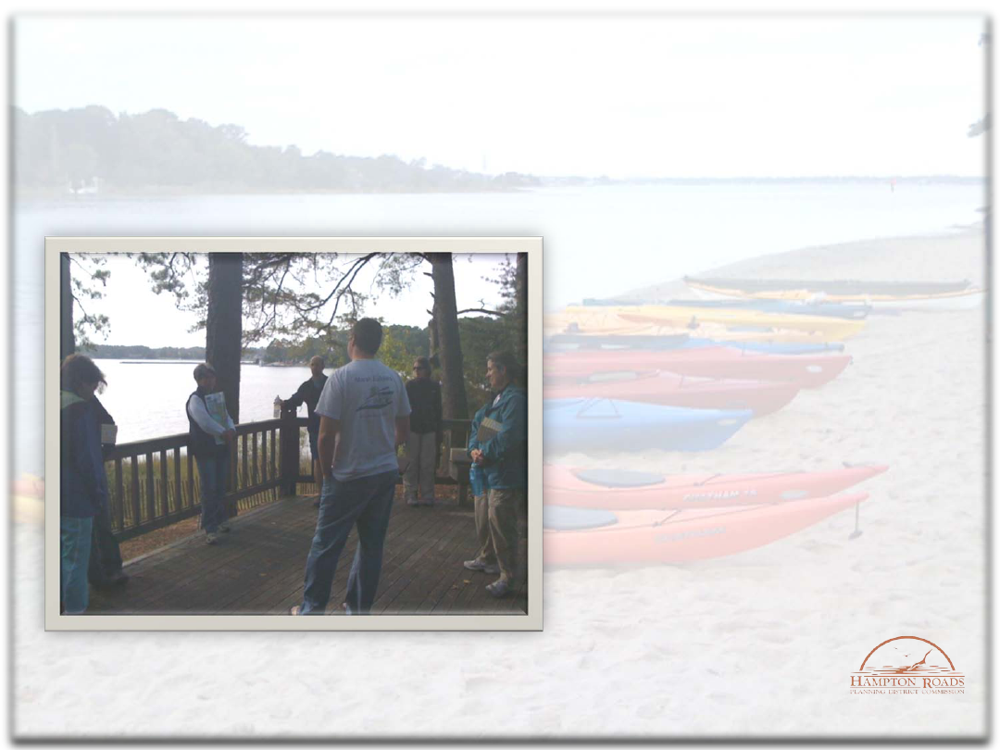

Hampton Roads Watershed
Roundtable:
Annual Report 2009
Presentation to the Hampton Roads Planning District Commission
By
Eric J. Walberg, Physical & Environmental Planning
Administrator
April 21, 2010

What is a Roundtable?
3
Intended to advise agencies
of the Commonwealth of
Virginia on refinement and
implementation of
Tributary Strategies for
Nutrient and Sediment
Reduction and related water
quality initiatives.
Provided a mechanism for
educating participants on
water quality issues,
funding opportunities and
technologies, and techniques
for achieving water quality
and living resource goals.

Hampton Roads Watershed
Roundtable 2009
5
Meetings focused on areas of interest identified by the
Roundtable and on the continuing evolution of the Roundtable
structure and membership.
Topics and activities included:
Energy co-generation at the regional landfill;
Kayak tour and discussion of the Lynnhaven River;
Training on public involvement strategies for local
governments and non-profit organizations.

Hampton Roads Watershed
Roundtable 2009
6
Participants included
representatives from local
government,
environmental groups,
chambers of commerce,
soil and water
conservation districts, and
citizens groups.

Hampton Roads Watershed
Roundtable 2010
7
Develop electronic methods of communication for member groups,
including a calendar of regional events.
Seek out small/start-up groups for inclusion in the Roundtable.
Develop advance meeting schedule and distribute to membership.
Continue to provide watershed experiences (James River/Hoffler
Creek).
Continue to provide a forum for discussion of topics of regional and
common interest, including the Chesapeake Bay TMDL.